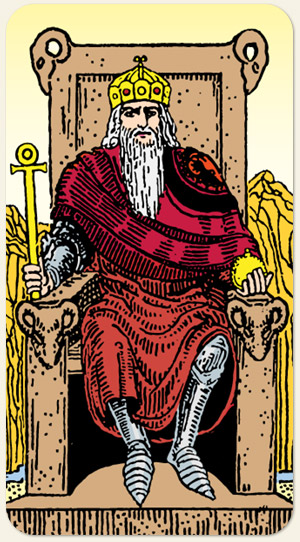

O domínio da razão sobre a emoção, a ordem e o poder da estrutura. Ele representa a capacidade de criar sistemas, definir limites e agir com autoridade para trazer segurança. É o arquétipo do estrategista que governa com firmeza e experiência.
Positivo: Independência, disposição para enfrentar desafios, coragem, bravura, pessoa experiente, liderança, ordem, capacidade de manter a paz.
Negativo: Tirania ou incompetência, falta de ação, autossabotagem, é o seu próprio tirano, fazer guerra pela guerra, um rei louco ou fraco, impotência, rei sanguinário.
Símbolos: Trono de Pedra, Cabeça de Carneiro, Cruz Ansata (ou Ankh), Globo na Mão Esquerda, Armadura, Montanhas Áridas, Cabelos e Barba Brancos, Postura Frontal.
Cores: vermelho, Azul, Amarelo, Cinza, Branco.
Elemento: Terra.